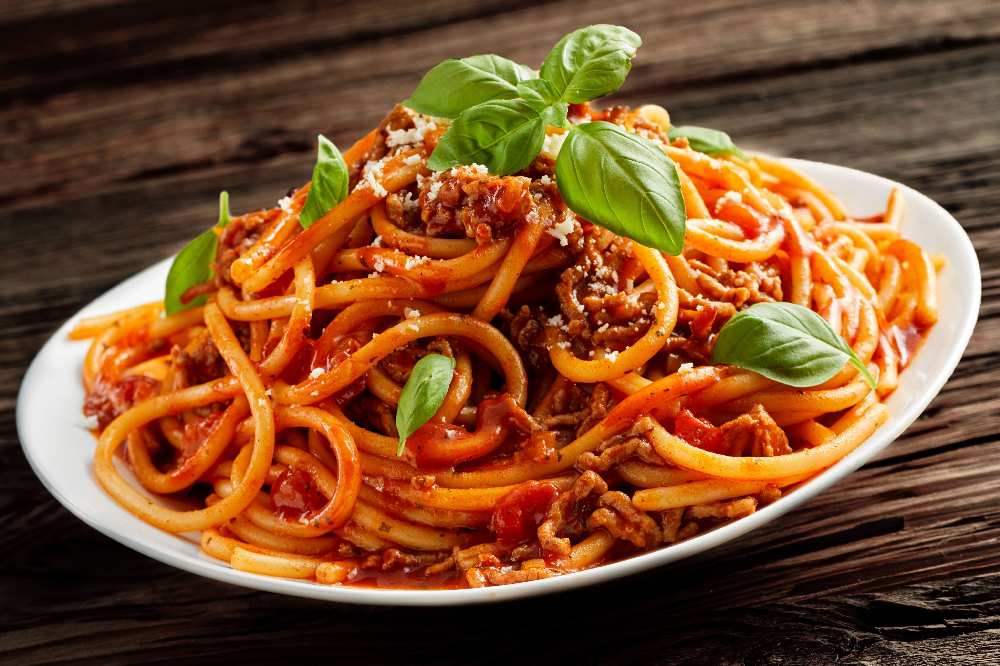

Na Naszej Stronie Znajdziesz Przepisy Na Każdą Okazję
Szukaj
Przpisy który wygrał ten tydzeń to przepis na spaghetti

Przepis
300 g mięsa mielonego (może być wieprzowe lub wołowe)
300 g sosu pomidorowego (ewentualnie puszka pomidorów lub kupny sos – passata pomidorowa)
2 łyżki koncentratu pomidorowego
300 g makaronu dobrej jakości (waga suchego w opakowaniu przed ugotowaniem)
1 cebula
ząbek czosnku
1 lub 2 łyżki tłuszczu do podsmażenia cebulki z czosnkiem (oliwa, olej lub smalec gęsi)
do smaku po pół łyżeczki: soli, oregano, tymianku, słodkiej papryki
1/4 łyżeczki świeżo zmielonego pieprzu czarnego
Idealne jest połączenie 1/3 mięsa wieprzowego (np łopatki lub szynki) oraz 2/3 mięsa wołowego (np ligawy).
Najlepsze jest świeżo zmielone mięso na średnich oczkach w domu lub w sklepie przy nas. Odradzam gotowe i
zapakowane mięso mielone, które jest tłuste i kiepskiej jakości.
Sprawdź Najlepsze Przepisy Miesiąca